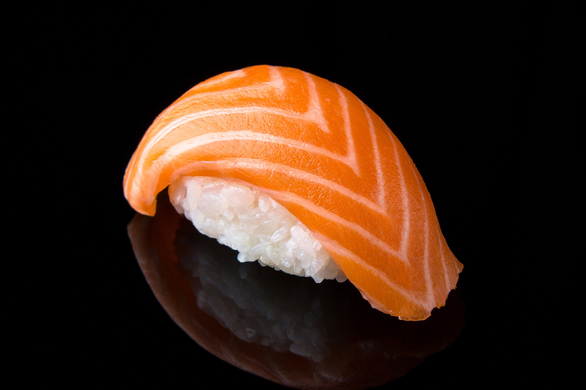

Nigiri Sushi recipe

Sushi is a perfect place to start a food trip about japanese food.
Ingredients
- 320g sushi rice
- 80ml sushi vinegar
- nori seaweed
- nigiri sushi mould
- wasabi paste
- soy sauce
- pickled sushi ginger
Possible sushi toppings
- salmon
- tuna
- yellowtail
- smoked salmon
- cooked octopus or squid
- avocado
Recipe
Sushi rice
- Wash rice with cold water, stirring the grains frequently, until water is clear. Drain rice and allow to dry for 15 minutes.
- Whisk together rice vinegar, sugar and salt and set aside.
- Cook rice in rice cooker according to directions, or simmer rice in 2 cups cold water for 15 minutes, partially covered. Turn off heat and allow rice to steep for 15 minutes more.
- Turn rice out onto a large sheet pan. Pour vinegar mixture over rice and with a spatula or rice paddle, turn rice over gently while trying not to break the grains, this is all about tender and pretty rice!
- Fan the rice with a pan to dry the rice and get rid of the steam that can take rice from al dente to mushy.
- Once the rice has cooled a bit and has absorbed the delicious vinegar mix, transfer to a bowl and keep warm. Extra rice can be refrigerated and turned into amazing fried rice within 3 days.
Nigiri
- While the rice is cooking, you can prepare the slices of fish, vegetables or any other toppings you want to use. You can also check our fabulous recipe for tamagoyaki, a delicious Japanese style omelette that is a popular sushi topping. If you don’t want raw fish, why not try smoked salmon, parma ham, deep-fried tofu, shiitake mushrooms, pickles, sun-dried tomatoes, avocado… No need to be be too precise with the size of the slice, just make it big enough to cover most of the rice pod and thick enough to get the full flavour.
- Now we can make the rice pods. Sushi masters usually rinse their hands in a mix of water and sushi vinegar which keeps them clean and helps to stop the rice sticking. If you want the easy way to make perfect rice pods every time, try using a nigiri sushi mould. Put the rice evenly inside, press down the lid, flip the mould over and press the rice out.
- If you like the fiery taste of wasabi, add a little to the underside of the topping. Then, while keeping your hands moist with water and sushi vinegar, press the topping onto a pod of sushi rice firmly. Some ingredients like the tamagoyaki usually have a very thin strip of nori seaweed to keep the topping from falling off the rice pod. The traditional way to serve sushi is with a little wasabi paste and a dish of soy sauce. Mix some wasabi with the soy sauce and then dip the sushi in it before eating. Pickled sushi ginger is eaten in between bites to cleanse the palate so you can appreciate the delicate flavours of different toppings.